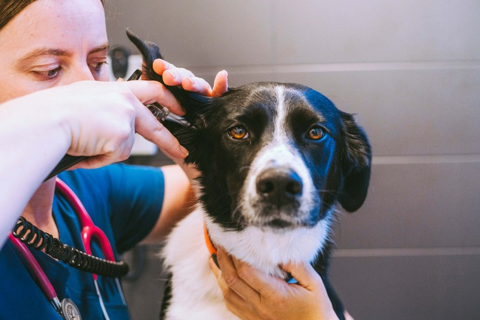

Medicina Interna y Preventiva
Ofrecemos una atención integral a tu mascota para el diagnóstico rápido y el tratamiento eficaz de las enfermedades que le pueden afectar en todas las etapas de su vida.